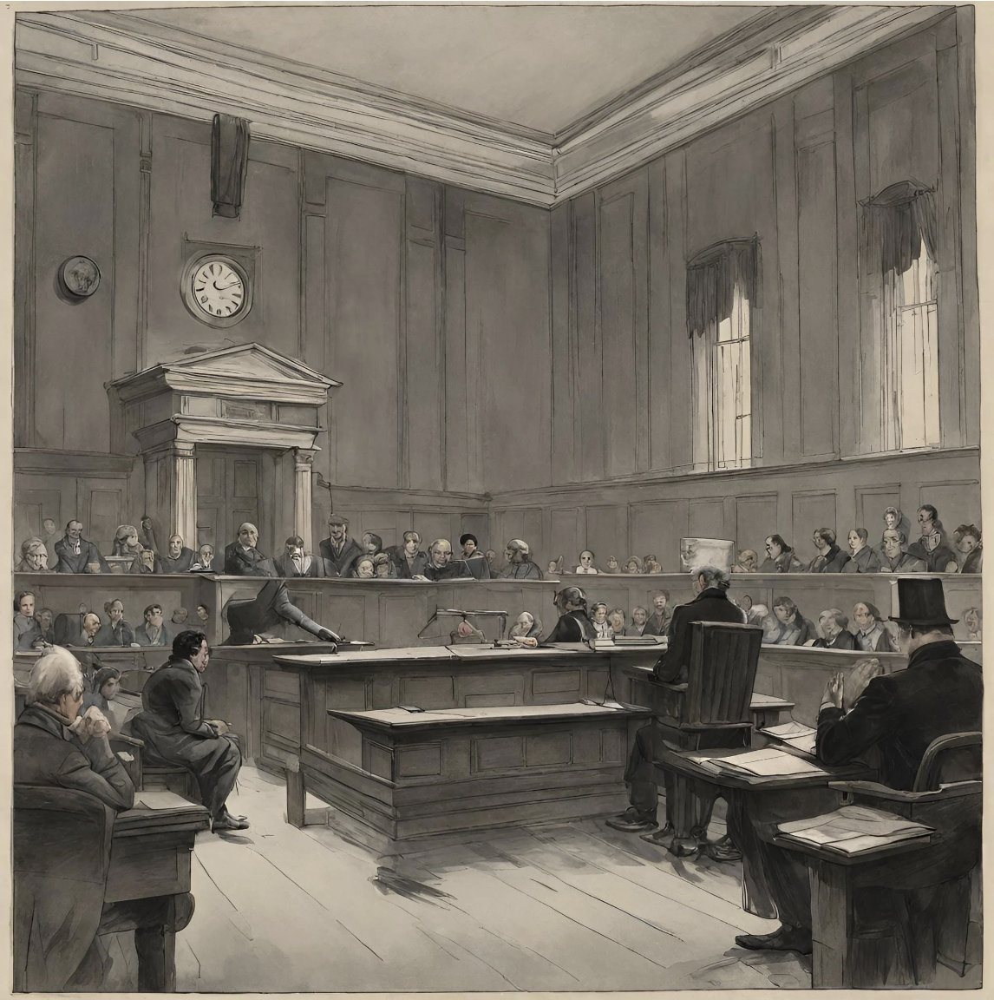

Trial of Justine Moritz
The murder of William Frankenstein was recently convicted. William Frankenstein was found dead in the woods of Geneva, with him being strangled to death. Shortly after, Justine Moritz is found with a picture that William had before his death, leading to Justine Moritz being apprehended and put on trial. According to Victor Frankenstein, a brother of William Frankenstein, the witness stated that, “ She had been out the whole of the night on which the murder had been committed and towards morning had been perceived by a market-woman not far from the spot where the body of the murdered child had been afterwards found. The woman asked her what she did there, but she looked very strangely and only returned a confused and unintelligible answer. She returned to the house about eight o’clock, and when one inquired where she had passed the night, she replied that she had been looking for the child and demanded earnestly if anything had been heard concerning him. When shown the body, she fell into violent hysterics and kept her bed for several days. The picture was then produced which the servant had found in her pocket; and when Elizabeth, in a faltering voice, proved that it was the same which, an hour before the child had been missed, she had placed round his neck, a murmur of horror and indignation filled the court ” (Shelley 84). Justine later adding that at night she was locked out of the city and forced to sleep in a barn during the night, and was unsure how she obtained the locket. After the trial, Justine Moritz confessed, leading to her being swiftly executed with all ballots being thrown black. According to Elizabeth Frankenstein, Justine said that, “ I did confess, but I confessed a lie. … Ever since I was condemned, my confessor has besieged me; he threatened and menaced, until I almost began to think that I was the monster that he said I was. He threatened excommunication and hell fire in my last moments if I continued obdurate ” (Shelley 88).